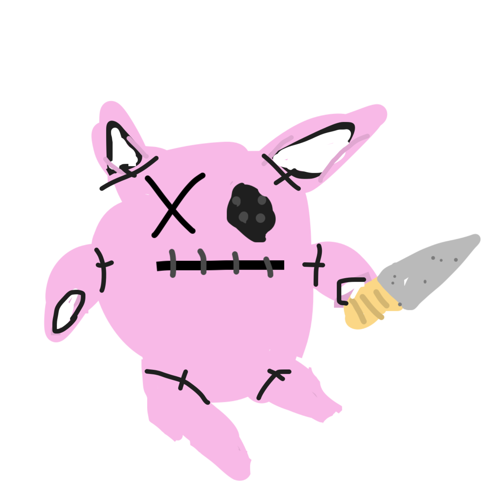
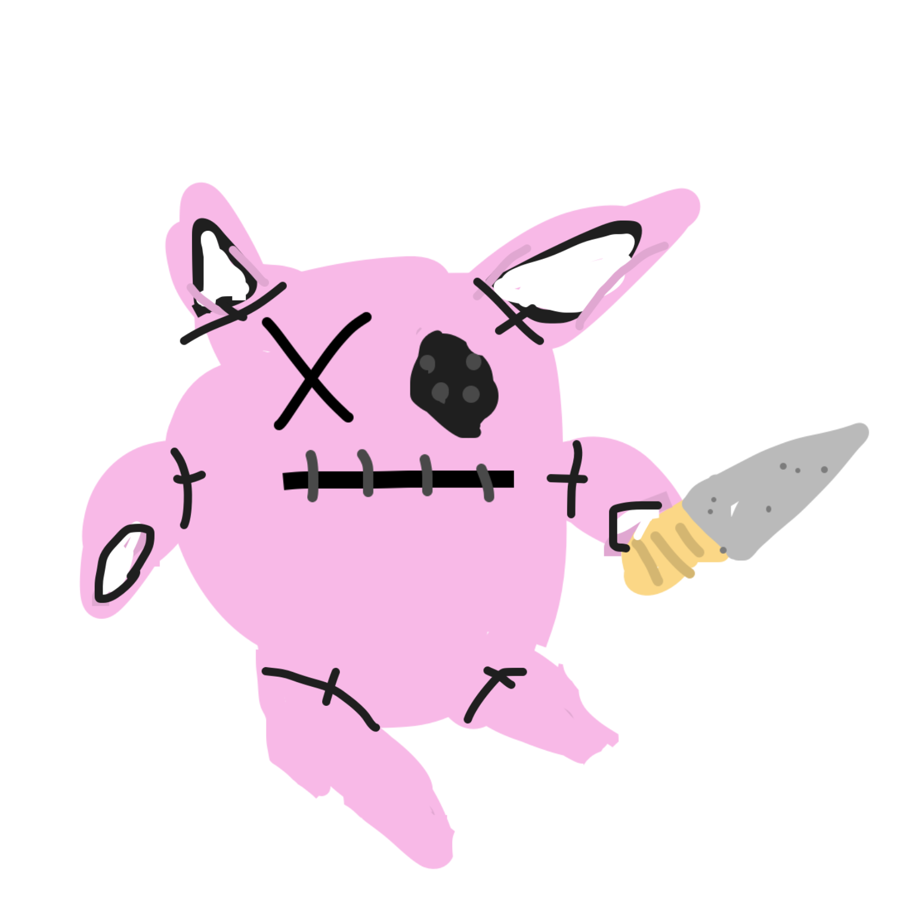

Quacker is the name of an evil old guy who spreads chaos using his granola bar factory. Quacker
recently invented quacker jacks, playing cards that are possesed by quacker spirits. Quacker jacks
always manage to escape whenever someone trys to kill them. Grandpa keeps trying to shoot a nuke
at quacker but instead grandpa ends up on the news as some crazy old guy who likes to blow stuff up.
The 3 quacker jacks alive today are the ones who freed the killer bunnies. They were sent to grandpa
prison, and they helped the killer bunnies break out by giving them knifes. Almost every killer bunny
is hiding a knife somewhere just in case they need to kill somebody.
 
